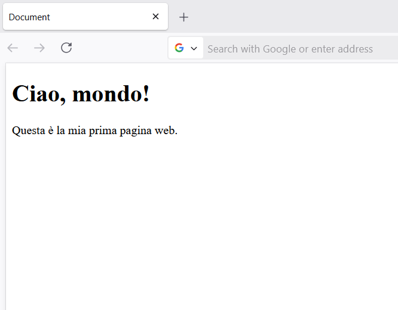

Guida HTML: cos’è e come usarlo al meglio
Se sei agli inizi nel mondo della programmazione web, probabilmente hai sentito parlare di HTML. Ma cos'è esattamente? A cosa serve? In questo articolo ti guiderò passo passo alla scoperta del linguaggio base del web. Imparerai cos'è HTML, la sua storia, come funziona, come è strutturato un template HTML, e dove poter scrivere e studiare il codice HTML.
Cos'è HTML?
HTML è l’acronimo di HyperText Markup Language. Si tratta del linguaggio standard usato per creare pagine web. In parole semplici, HTML comunica al browser quali contenuti visualizzare come: titoli, paragrafi, immagini, link e molto altro.
HTML non è un linguaggio di programmazione, ma un linguaggio di markup: serve a strutturare e organizzare il contenuto di una pagina web.
La Storia del Linguaggio HTML
Il linguaggio HTML è nato nei primi anni ’90 grazie a Tim Berners-Lee, il fondatore del World Wide Web. La prima versione di HTML fu proposta nel con l’obiettivo di facilitare la condivisione di documenti scientifici tra ricercatori universitari. Con il tempo, HTML è stato continuamente aggiornato e migliorato:
- HTML 2.0 è stato standardizzato nel
- HTML 4.01 è diventato uno dei formati più diffusi negli anni
- HTML5, introdotto nel , ha innovato il web con il supporto per contenuti multimediali
Come Funziona l'HTML
Ogni elemento HTML è composto da tag HTML che servono a delimitare e descrivere il contenuto all’interno di una pagina web. Nella maggior parte dei casi, un tag HTML è formato da due parti: un tag di apertura, es. <p> , e un tag di chiusura, es. </p>. Entrambi sono racchiusi tra le cosiddette parentesi angolari: < (minore) e > (maggiore).
Il tag di apertura indica l’inizio dell’elemento HTML, mentre il tag di chiusura — che è identico ma preceduto da una barra (/) — ne segna la fine. All’interno di questi due tag viene inserito il contenuto vero e proprio, cioè il testo che vogliamo visualizzare nella pagina:
Per esempio, se vogliamo creare un paragrafo, utilizzeremo il tag <p> per iniziare, poi scriveremo il nostro testo, e infine chiuderemo l’elemento con </p>. Il codice completo sarà il seguente:
<p>Questo è un paragrafo</p>
In questo caso:
- <p> è il tag di apertura del paragrafo
- Questo è un paragrafo di esempio. è il contenuto
- </p> è il tag di chiusura
Per aiutarti a capire meglio, ecco un elenco dei tag HTML più utilizzati, che incontrerai spesso quando costruirai una pagina web:
- <p>: definisce un paragrafo di testo.
- <a>: definisce un link.
- <img>: serve per inserire immagini.
- <ul> e <ol>: definiscono rispettivamente liste non ordinate e ordinate.
Com’è fatta una pagina HTML?
Ogni pagina HTML ha una struttura base, un po’ come uno scheletro. Proprio come il corpo umano ha uno scheletro che sostiene tutti gli organi, anche una pagina web ha bisogno di una base solida su cui costruire tutto il contenuto che verrà poi mostrato nel browser. Senza questa struttura iniziale, il codice HTML sarebbe disorganizzato e i browser non saprebbero come interpretarlo correttamente.
In pratica, quando crei una nuova pagina HTML, ci sono alcuni elementi essenziali che vanno sempre inclusi. Anche se all’inizio ti sembrano complicati, col tempo ti verranno naturali come l’intestazione di una lettera o il titolo di un documento.
<!DOCTYPE html>
<html>
<head>
<title>La mia prima pagina HTML</title>
</head>
<body>
<h1>Ciao, mondo!</h1>
<p>Questa è la mia prima pagina web.</p>
</body>
</html>Spiegazione dei principali elementi:
- <!DOCTYPE html>: questa riga serve per dire al browser che stiamo usando HTML5, cioè l’ultima versione del linguaggio HTML.
- <html>: è il contenitore principale di tutta la pagina. Tutto il contenuto va scritto dentro questo tag.
- <head>: questa parte non mostra niente sulla pagina visibile, ma contiene informazioni importanti come il titolo della pagina (quello che vedi nella scheda del browser) e altre impostazioni tecniche.
- <body>: è la parte più importante per noi all’inizio, perché qui va tutto ciò che l’utente vede sulla pagina: titoli, testi, immagini, link, ecc.
Dove Scrivere Codice HTML
Puoi scrivere HTML con qualsiasi editor di testo anche con il blocco note, ma per comodità si usano strumenti più adatti:
Alcuni editor consigliati per principianti sono:
- Visual Studio Code (gratuito e potente)
- Sublime Text (leggero e veloce)
- Notepad++ (semplice e pratico)
Dopo aver scritto il tuo codice HTML in un editor di testo, è importante salvarlo correttamente affinché il browser possa riconoscerlo e mostrarlo come una pagina web.
- Apri il tuo editor di testo (ad esempio Blocco Note su Windows).
- Vai su File e poi "Salva con nome"
- Scegli la cartella in cui vuoi salvare il file come il desktop
- Assicurati di dare al file un nome che termini con code.html (ad esempio, pagina.html)
- Infine, clicca su "Salva"
Per vedere il risultato finale, apri il file salvato facendo doppio clic su di esso:
Dove Studiare HTML
Se vuoi imparare HTML da zero, ci sono tantissime risorse gratuite. Ecco alcune delle migliori:
- W3Schools (ottimo per principianti)
- MDN Web Docs (risorsa completa e dettagliata)
- Codecademy (corsi interattivi)
- freeCodeCamp (apprendimento pratico)